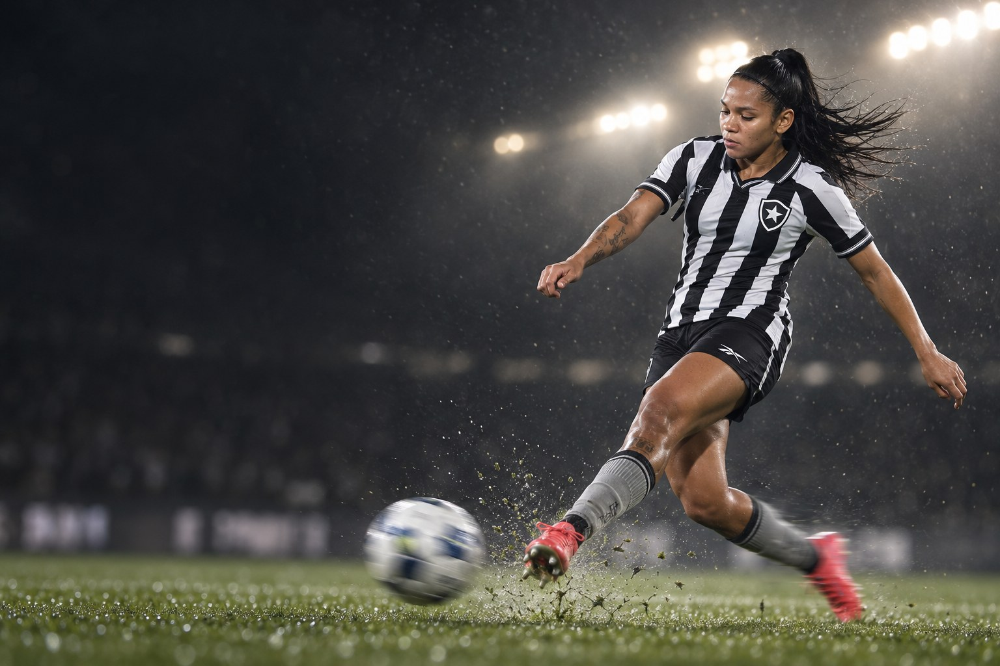
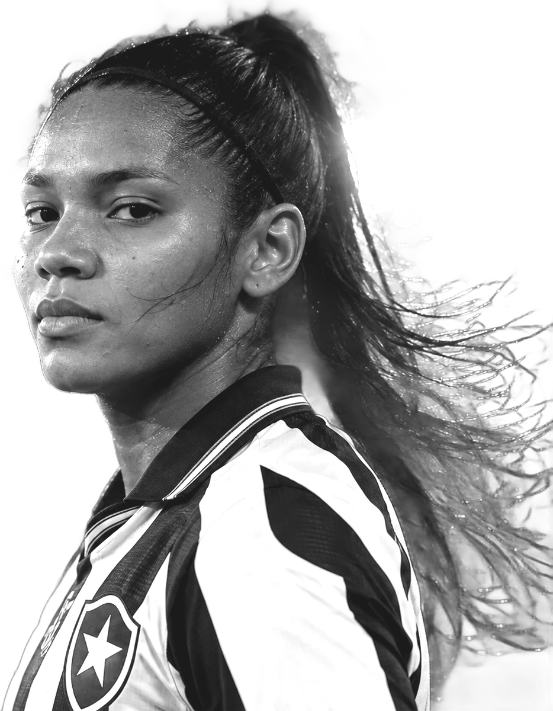
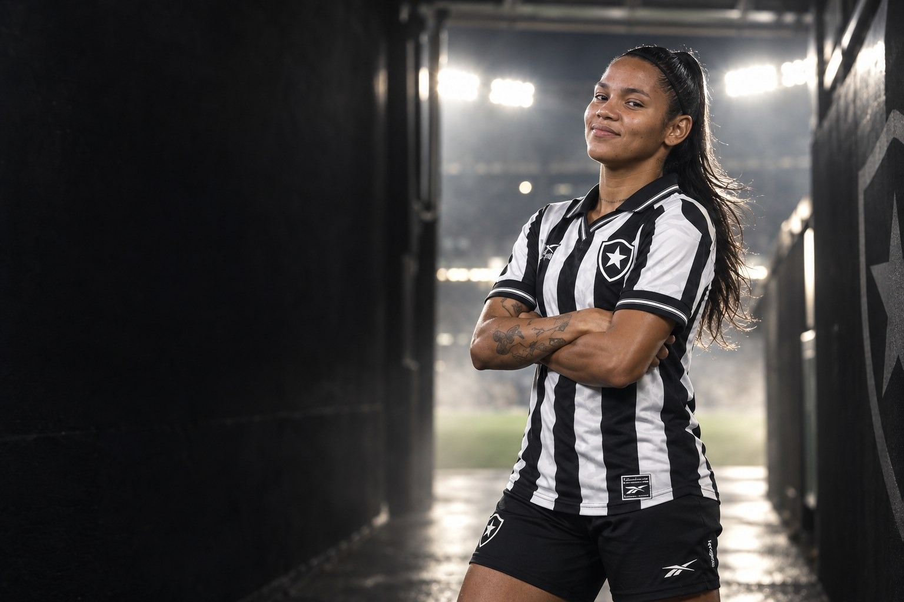
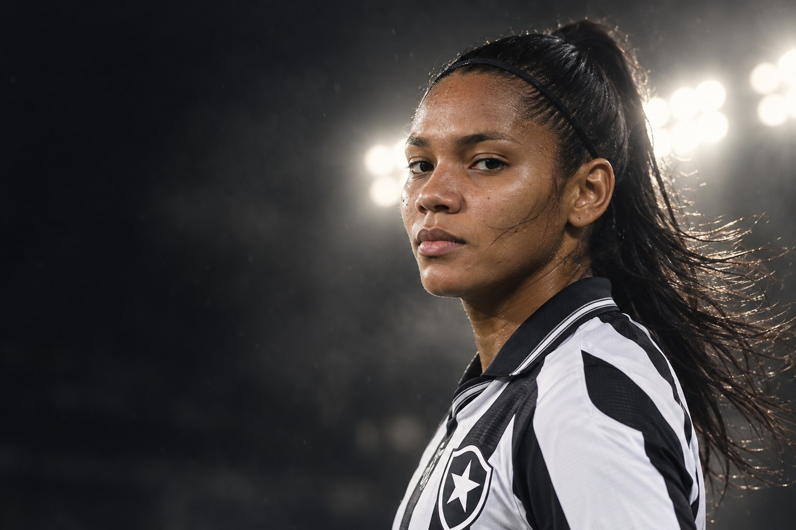
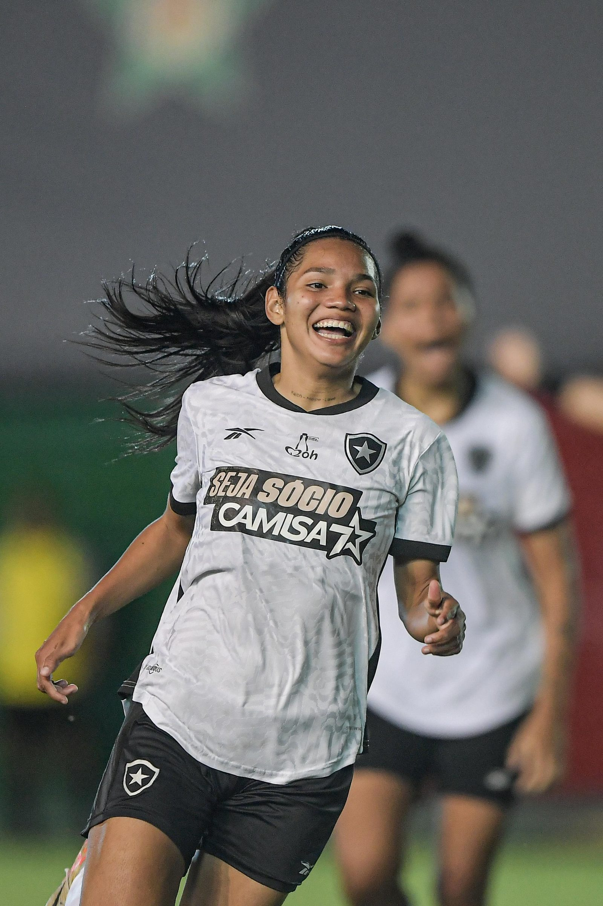
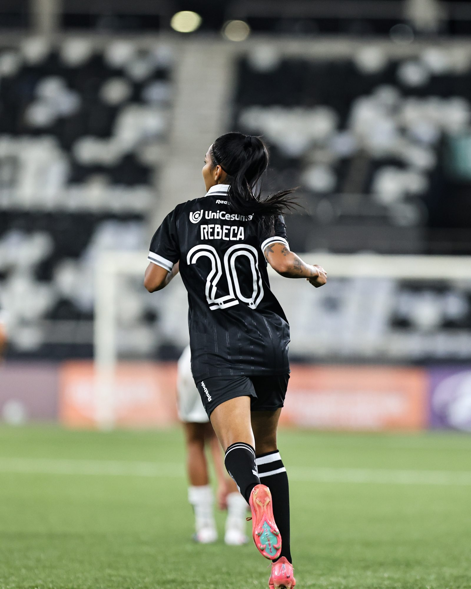
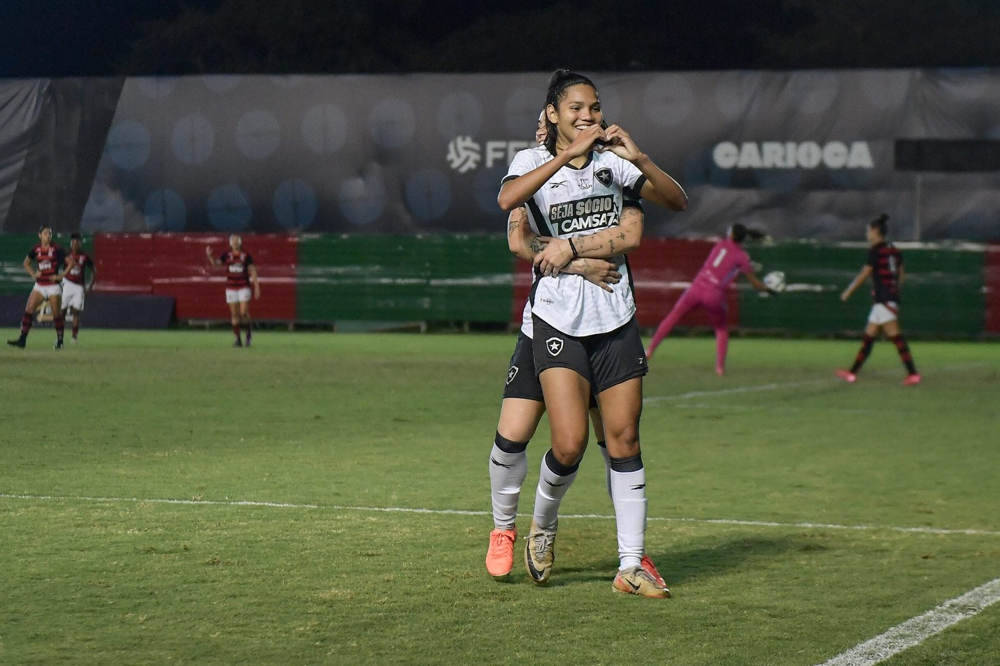

Botafogo
Clube atual
55 jogos · 8 gols


“Merecíamos o título.”

Sobre
Ana Rebeca Sousa Mota é futebolista profissional e atua como atacante. Clube atual: Botafogo.

“Merecíamos o título.”Rebeca, à CBF, depois de marcar o gol do título do Brasileiro Feminino Sub-20 de 2025
Perfil
Carreira em números
Carreira
Clubes em destaque
55 jogos · 8 gols
Conquistas
Galeria



Currículo esportivo
| Temporada | Clube | País | Jogos | Gols | Assistências |
|---|---|---|---|---|---|
| 2026 | 2 | 0 | 0 | ||
| 2026 | 21 | 3 | 0 | ||
| 2025 | 19 | 2 | 1 | ||
| 2025 | 9 | 3 | 1 | ||
| 2024 | 4 | 0 | 1 | ||
| 2024 | 15 | 7 | 0 | ||
| 2023 | 11 | 2 | 0 | ||
| 2022 | – | – | – | ||
| 2022 | 6 | 2 | 0 | ||
| 2022 | 3 | 0 | 0 | ||
| 2022 | 3 | 0 | 0 | ||
| 2021 | 3 | 0 | 0 | ||
| 2020 | 3 | 0 | 0 |
Jogos, gols e assistências conforme a base estatística Ogol. O clube atual segue o anúncio oficial do clube.
Na mídia
Contato profissional
Assuntos profissionais, comerciais e de carreira: fale pelo perfil oficial da atleta.
Mídia kit
International profile